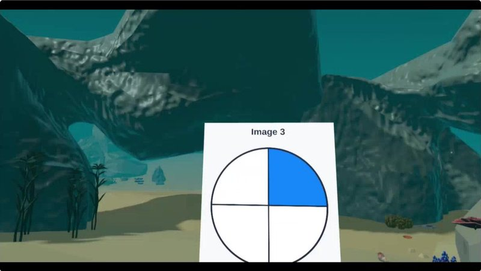
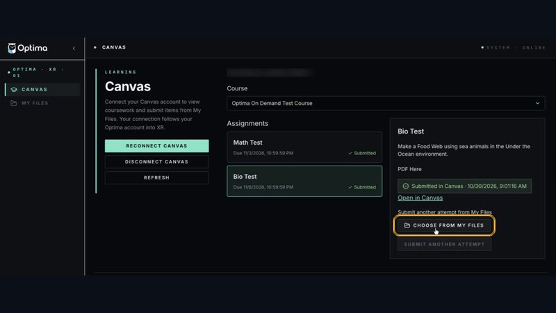

A house or a home?
In Chapter 3, Isaac’s mother walks him to the river. On the way back, she says something I copied into my notebook:
Their houses are in town. This river, this dirt, this is their home.Isaac’s mother, Chapter 3
Today’s expedition: build both places. Then tell me what she means.
Build Isaac’s house and his home
Put the house in town on one side and the river on the other. Then explain what Isaac’s mother means by home.
Tap the box next to each step when you finish it.
- 🖥️ Before you put on your headset
- Step 1 · Know your modelsYou need these models. In VR, type the first word in the Filter models box.
The house in town
- Log Cabin (Wall (with Door slot)): the front of Isaac’s house
- Log Cabin (Roof Middle): the roof
- Red Folded Blanket: the blanket Isaac grabbed the night of the fire
The river home
- Lilypads (Large): the river (use 3 or 4 in a line)
- Bench: the long wooden pier (use 2 or 3 in a row)
- Dog: Jumper, who swims in the river with Isaac
- 🥽 In VR
- Step 2 · Go in🔗 First time? Connect Canvas at xr.optimaed.com first. See Having trouble in VR? below.
- Put on your headset. Open the On-Demand app.
- Click Explore. Type Tranquil in the Filter environments box.
- Click Tranquil Forest, then Begin Solo.
- Step 3 · Build itOpen your menu (top button, right controller) and click Models. Build two places with open ground between them:
- The house: the wall, the roof and Isaac’s blanket.
- The home: the river, the pier and Jumper.
✋ To move a model: grab it with the palm trigger (under your middle finger). Use both palm triggers to make it bigger or smaller. - Step 4 · Practice your 2 sentencesWalk from the house to the river. Practice saying these 2 sentences out loud:🗣 “Isaac’s mother says the river is their home because ___. In Chapter 3, ___ shows this.”
- Step 5 · Earn your river stoneVR onlyPut a Stone Ring in the water at the end of your pier. Those are the sharp stones where the old women danced to say good‑bye. This step earns your river stone.
- Step 6 · Record and submit
- Stand back so you can see both places.
- Open your menu. Click Library, then Camera, then Video.
- Record. Show your build and say your 2 sentences. Stop by 30 seconds.
- Click the Canvas tab. Pick 18.2 VR · This River, This Dirt.
- Click Choose from My Files. Pick your video. Click Use this file.
- Click Submit to Canvas. Look for the green Submitted tag.
📌 This video is the only thing you turn in. Want to fix it? Record again and submit again. - ✅ After
- Step 7 · Check and leave
- Press the Meta button on your right controller. Click Quit.
- Open the Canvas assignment. Check that your video is there.
🛟Having trouble in VR?Steps with pictures, and a how-to video
How-to video: Optima On-Demand and Canvas
These pictures come from other maps. Your map will be Tranquil Forest, but the buttons are the same.
🖥️ First time only: connect Canvas (on your computer)
 1Log in
1Log inGo to xr.optimaed.com on your computer. Log in with the same login you use in VR.
 2Connect to Canvas
2Connect to CanvasClick Connect to Canvas. Log in with your usual Canvas username and password, then click Authorize. You will see Canvas connection completed.
 3Find our class
3Find our classClick Canvas on the left and pick our class. Our assignments show up. You only do this part one time.
📄 Only if the assignment has a file
 4Get the file ready
4Get the file readyOpen the assignment and click Open in Canvas to download the file. Then click My Files and Upload File.
🥽 In the headset
 5Explore tab
5Explore tabPut on your headset. Click the Explore tab and type the map’s name in Filter environments.
 6Begin Solo
6Begin SoloClick the map, then click Begin Solo.
 7Read the assignment
7Read the assignmentPress the top button on your right controller to open your menu. Click the Canvas tab and pick our assignment to read the directions. Tip: point at a mint side grip and squeeze to pull the tablet to your hand.
 8Bring out the models
8Bring out the modelsClick Models. Type the exact name in the search box, or scroll with your thumbstick. Click a model to bring it out.
 9Move and resize
9Move and resizeGrab a model with the palm trigger. Turn and move it with the thumbstick. Use both palm triggers to make it bigger or smaller.

10Need a file?Click Library, then Files. Pick your file to place it in the world, next to your model.
 11Record a video
11Record a videoClick Library, then Camera. Move the tablet until your whole scene fits. Slide Height or the zoom bar if you need to. Switch to Video and start recording. Say your 2 sentences, then stop at 30 seconds or less.
 12Pick your video
12Pick your videoClick the Canvas tab and pick our assignment. Click Choose from My Files, pick your newest video, then click Use this file.
 13Submit to Canvas
13Submit to CanvasClick Submit to Canvas and look for the green Submitted tag. To leave VR, press the Meta button on your right controller, then click Quit.
🔁 Didn’t work in VR? Two other ways

14Use the websiteGo to xr.optimaed.com and click Canvas. Pick our assignment, click Choose from My Files, pick your video and submit it.
Your videos save to My Files at xr.optimaed.com on their own. You can also download your video there and upload it to the Canvas assignment yourself.
- Your video is 30 seconds or less. It shows the house and the river home, and you say 2 sentences: what Isaac’s mother means by home, and one detail from Chapter 3 or 4 that shows it.
River stone earned!
Only Story Expedition travelers earn this one. It comes from the river Isaac’s mother called home.
Vision or real?
Isaac sees things before they happen. Sort each moment from Chapters 3 and 4: did only Isaac see it, or did it really happen?
Say 2 sentences on video (30 seconds or less)
In 2 sentences, explain what Isaac’s mother means when she says the river is their home and the house is not. Give one detail from Chapter 3 or 4 that shows it.
- Isaac’s mother says the river is their home because ___.
- In Chapter 3, ___ shows this.
- You finished the game.
- Your video is 30 seconds or less.
- Your 2 sentences have all 3 checks.
- Open the Canvas assignment 18.2 VR · This River, This Dirt and click Start Assignment.
- Click Media, then Record/Upload Media, then Start Recording.
- Say your 2 sentences. Stop at 30 seconds or less. Click Finish, then Save.
- Click Submit Assignment.
📌 This video is the only thing you turn in.